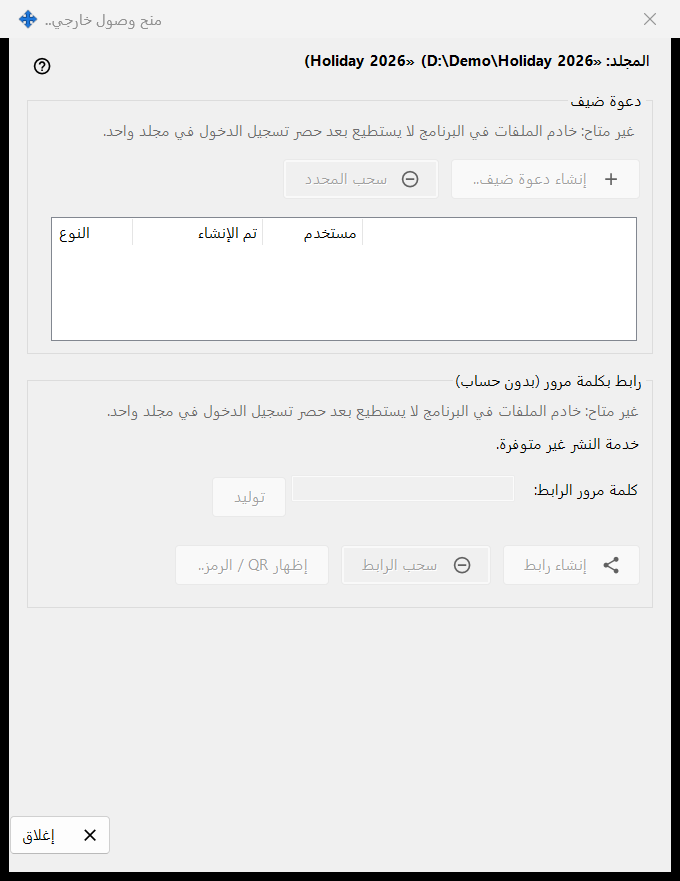
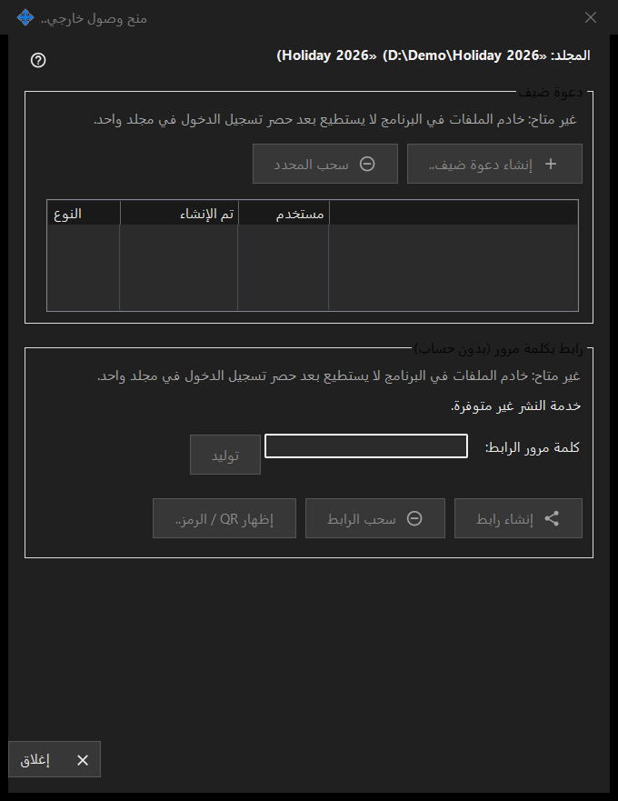

منح وصول خارجي
الغرض من هذه النافذة
تتحكم في الوصول إلى مجلد مشارك واحد للأشخاص خارج أجهزتك: دعوة ضيف، أو رابط بكلمة مرور لا يحتاج إلى حساب. تُفتح من الزر منح وصول خارجي.. في النافذة الرئيسية لـ Share Manager للمجلد المحدد. في هذا الإصدار تكون عناصر إنشاء وصول جديد معطّلة وتعرض النافذة السبب، بينما يمكن سحب الوصول القائم.


بهذا الترتيب
- اقرأ سطر العنوان الذي يحمل اسم المجلد ومساره.
- في كل مجموعة اقرأ سطر السبب؛ وما دام معروضًا لا يمكن إنشاء شيء جديد.
- لإزالة وصول، حدّد دعوة واضغط سحب المحدد، أو اضغط سحب الرابط.
- اضغط إغلاق (Escape) للخروج.
عناصر النافذة
المجلد والحالة
يذكر السطر العريض المجلد ومساره. ويُبلغ سطر الحالة في الأسفل عن آخر نتيجة. وعندما لا تعمل خدمة النشر تقول النافذة: خدمة النشر غير متوفرة. وتكون أزرارها معطّلة.
دعوة الضيف
تضم المجموعة الزر إنشاء دعوة ضيف.. والزر سحب المحدد وقائمة بأعمدة النوع وتم الإنشاء ومستخدم لدعوات الضيوف لهذا المجلد. يزيل السحب الدعوة؛ ولا يحذف المجلد ولا ملفاته.
رابط بكلمة مرور (بلا حساب)
تعرض الحالة إما لم يتم إنشاء الرابط. وإما الرابط نشط. حقل كلمة مرور الرابط: مُقنَّع، ويملؤه الزر توليد. يصبح الزر إنشاء رابط تحديث الرابط ما دام الرابط نشطًا. يسأل سحب الرابط أولًا لأن كل جلسة نشطة على الرابط تنتهي. ويعرض الزر إظهار QR / الرمز.. الرابط على هيئة رمز.
سبب تعطيل الإنشاء
تعرض كل مجموعة سطر سبب يقول إن خادم الملفات في البرنامج لا يستطيع حصر تسجيل الدخول في مجلد واحد. وما دام هذا السطر معروضًا تكون كل عناصر التحكم التي تنشئ دعوات أو روابط معطّلة. ويعتمد سحب الوصول القائم على ما هو موجود فقط.